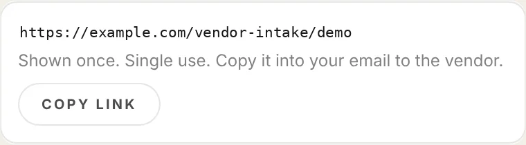
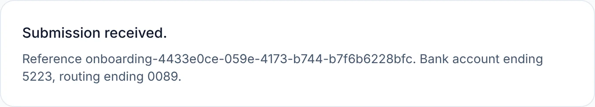
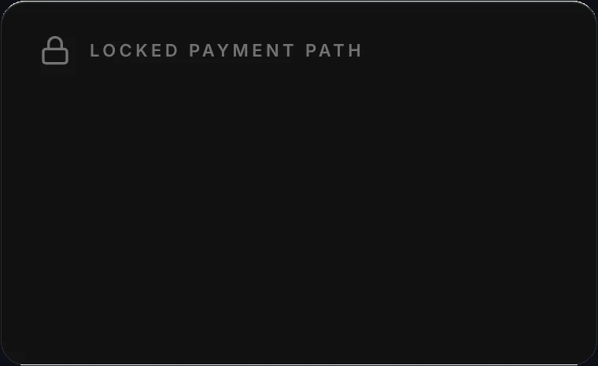
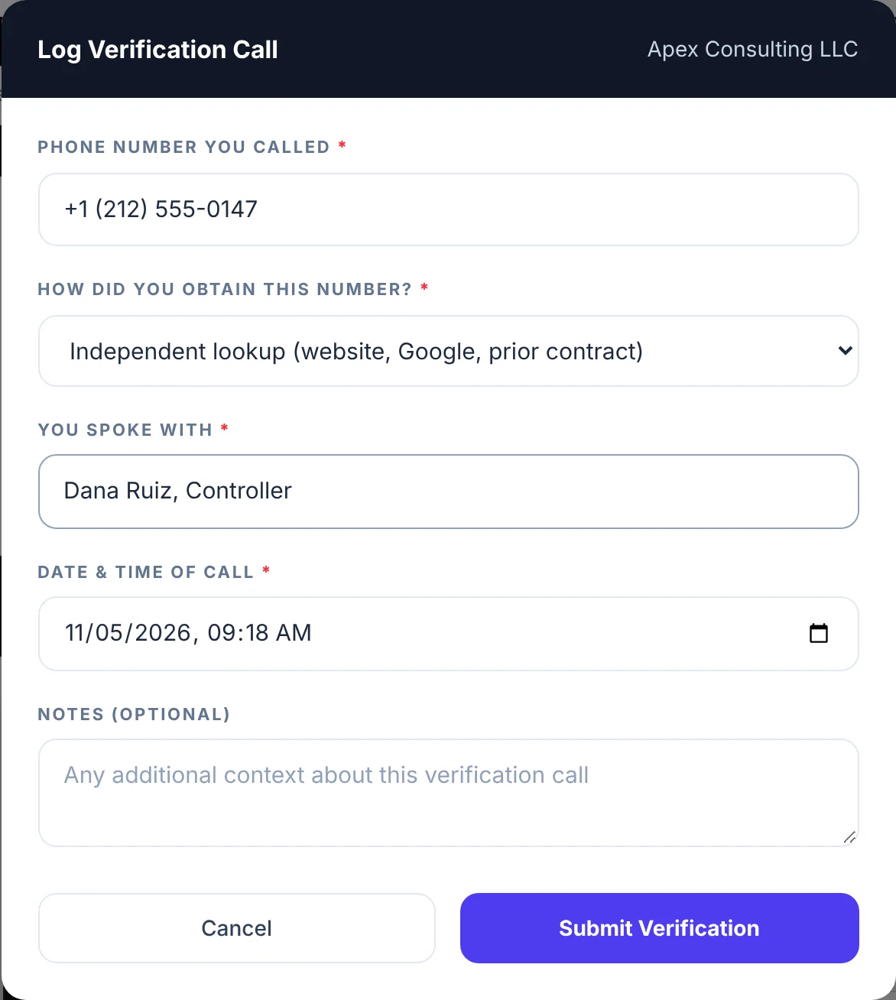

BUILT & BUILDING / 03
Vendor Onboarding & Payment Controls
Start working with a new vendor the day their name shows up. The system collects the bank details, locks them away, watches for changes and holds every payment until the details are confirmed. Your team only steps in for the decisions that move money.

HOW A PAYMENT GETS CLEARED
- SYSTEMVendor enters their details onceThrough a single-use link. Nobody re-types bank details from an email or a PDF.
- SYSTEMDetails are encrypted and locked awayIn the payment vault, apart from everyday vendor records. Everyone else sees the last four digits.
- SYSTEMPayment is heldEvery payment checks the same rules. Anything missing, and the money doesn't move.
- YOUR TEAMOne verification callTo a number found independently, logged with who confirmed what, and when.
- SYSTEMCleared, and watchedIf the bank details ever change, payment locks again until the new details are confirmed.
People make the calls that move money. The system does the rest.
THE SYSTEM HANDLES
- Collecting the details. The vendor fills in their own form, once. No copying from one system to another.
- Storing them safely. Bank details are encrypted the moment they arrive and kept apart from everyday vendor records.
- Catching changes. Any change to bank details becomes a new version and locks payment again until it's confirmed. The old version is kept, never overwritten.
- Holding payment. Onboarding complete, current bank details confirmed, required documents in. If any one is missing, payment doesn't go out.
- Chasing paperwork. A reminder at 14 days for an outstanding document, and a payment hold at 30 days when that document affects payment.
- Keeping one record. The same payment card on the vendor screen and the invoice screen, and every step logged.
YOUR TEAM HANDLES
- The verification call. Calling a number found independently, never one from the form, invoice or email, and logging the result.
- Reviewing what the vendor sends. Accepting or rejecting the documents you asked for.
- Possible duplicates. Deciding when a tax ID matches a vendor you already have.
- Approvals. Purchases and payments are approved by people, the way they are today.
Those are the steps where a mistake costs money. Everything else runs without anyone having to remember it.
WHERE THE BANK DETAILS LIVE
In a payment vault, not in the vendor list.
Encrypted on arrival
Routing and account numbers are encrypted with AES-256 as soon as the vendor submits them, each record locked with its own key.
Kept apart
The vault is built to run as its own database, separate from everything else, with its own access rules. Screens and reports only ever see the last four digits.
Never overwritten
A change creates a new version. You can always see what changed, when, and who confirmed it.
WHY IT MATTERS
- Payment fraud usually arrives as a routine email. "We changed banks, please update." The defence is a phone call to a number you found yourself. This makes that call a required step, not a good habit.
- Setup and payment are separate gates. A new vendor can be tracked and assigned work immediately. Money is the only thing that waits.
- No more re-keying. Bank details aren't copied from an email into a spreadsheet into the payment system. Every copy is a chance for a typo or a swap.
- One card, everywhere. The payment details look the same wherever someone approves, and full account numbers are never shown on screen.
The walkthrough
SYNTHETIC DATA Captured from the working software running on test data only. The company, the person, the bank and the numbers are made up. The bank name and the link address were edited for publication.





WHAT THIS PROVES
Payment controls: a vendor can be set up immediately, but nothing is releasable for payment until onboarding is complete and the current bank instructions are verified by phone.
Built
- Single-use onboarding links, the vendor form, the security warning, the verification-call log and the locked payment card run in the real software.
- The encrypted payment vault with versioned bank details, the payment release check, and the 14 and 30-day document follow-ups are built and tested.
- Captured against a test backend with synthetic data only.
Not yet
- No real banking data is stored yet. The vault's own separate database, production-grade key management and real sign-in come first.
- Outbound email and a live payment integration are not built yet.
Paying vendors on trust and email? Let's put a gate on it.
ASK FOR A WALKTHROUGHThirty minutes, on a screen share or at your office in Dallas.
Or write to bluedottechnology [at] outlook [dot] com